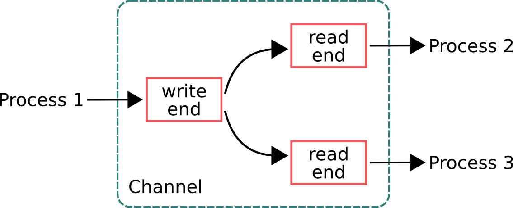

- Overview & Motivation
- CSP vs Actor Model
- Introduction to CSP
- Code examples in PyCSP
- Travelling Salesman Problem in PyCSP
- Summary
Outline
CSP Overview
- A paradigm for expressing concurrency
- Based on message-passing
- First described in a 1978 paper by Tony Hoare
- (Actor model first described in 1973)
- Key concepts
- Sequential processes
- Synchronous communication through channels
- Multiplexing of channels with choice/alternation
Two Models of Concurrency
-
Shared Memory
- Threads
- Locks
- Mutexes
-
Message Passing (CSP and Actor Model)
- Processes
- Messages
- No shared data
Shared Memory - Problem 1


- Program crash in critical region corrupts memory
-
- Difficult to reason about
- Hard to recover from failure
Shared Memory - Problem 2

- Where is shared memory physically located?
-
- Even harder to recover from failure
Multi/Many-core is a Reality

- Commercially available
- 72 identical cores @ 1.0 to 1.2GHz
- 256 KB L2 per core
An object oriented language is a language with good support for objects. A concurrency oriented language has good support for concurrency
Outline
- Overview & Motivation
- CSP vs Actor Model
- Introduction to CSP
- Code examples in PyCSP
- Travelling Salesman Problem in PyCSP
- Summary
Channel vs Mailbox

-
CSP
- Communication through channels
- Processes are "anonymous"

-
Actor Model
- Point-to-point communication
- No anonymity
CSP – communication semantics

Outline
- Overview & Motivation
- CSP vs Actor Model
- Introduction to CSP
- Code examples in PyCSP
- Travelling Salesman Problem in PyCSP
- Summary
PyCSP
- Python library that implements core CSP primitives
- Development started in 2006. Still under active development
- Transparent distributed communication using standard python modules
Process and Parallel
@process
def Process1():
time.sleep(1) # Sleep 1 second
print 'process1 exiting'
@process
def Process2():
time.sleep(2) # Sleep 2 seconds
print 'process2 exiting'
Parallel(process1(), process2()) # Blocks
print 'program terminating'
process1 exiting process2 exiting program exiting
Process and Spawn
@process
def Process1():
time.sleep(1) # Sleep 1 second
print 'process1 exiting'
@process
def Process2():
time.sleep(2) # Sleep 2 seconds
print 'process2 exiting'
Spawn(Process1(), Process2()) # Non-blocking
print 'processes started'
shutdown() # Blocks
print 'program terminating'
processes started process1 exiting process2 exiting program terminating
Channel–semantics
@process
def Process1(chan_out):
chan_out('Hello process2') # Blocks
print 'process1 exiting'
@process
def Process2(chan_in):
time.sleep(1) # Sleep 1 second
print 'reading from channel'
msg = chan_in() # Blocks
print 'message received: ', msg
chan = Channel()
Parallel(process1(chan.writer()), process2(chan.reader()))
reading from channel message received: Hello process2 process1 exiting
Channel–flexibility
@process
def Worker(input_chan):
(output_chan, work_func) = input_chan()
result = work_func()
output_chan(result)
def work():
return 2 * 2
input_chan = Channel()
Spawn(Worker(input_chan.reader()))
result_chan = Channel()
msg = (result_chan.writer(), work) # Careful, 'work' is shared reference
input_chan.writer()(msg)
result = result_chan.reader()() # Get result
AltSelect–multiplex channels
@process
def Process1(input_chan, output_chan):
input_guard = InputGuard(input_chan)
output_guard = OutputGuard(output_chan, msg='hello from process1')
(chan, msg) = AltSelect(input_guard, output_guard)
if chan == input_chan:
print 'input read: ', msg
elif chan == output_chan:
print 'output written'
input, output = Channel(), Channel()
Spawn(Process1(input.reader(), output.writer()))
if random.choice([True, False]):
input.writer()('hello process1')
else:
output.reader()()
PriSelect–timeout and skip guards
@process
def Process1(input_chan):
guards = [InputGuard(input_chan), SkipGuard()]
(chan, msg) = PriSelect(guards) # Always perform skip guard last
if chan == input_chan:
print 'input read: ', msg
else:
print 'no input'
input = Channel()
Spawn(Process1(input.reader()))
guard = OutputGuard(input.writer(), msg='hello process1')
PriSelect(guard, TimeoutGuard(seconds=1))
Outline
- Overview & Motivation
- CSP vs Actor Model
- Introduction to CSP
- Code examples in PyCSP
- Travelling Salesman Problem in PyCSP
- Summary
TSP Definition
- Given a list of cities and the distances between each pair of cities, what is the shortest possible route that visits each city exactly once and returns to the origin city?
Can be modeled as an complete, undirected weighted graph
Complexity for brute force approach: O(n!)
Example Graph – 4 cities
Example Route Lengths
Parallelization – generating tasks
- Sub-routes "AB", "AC", and "AD" used as worker tasks
Branch-and-Bound Optimization
- Discard sub-routes that already are longer than current shortest route
Demo
Resources
- PyCSP - http://code.google.com/p/pycsp/
- Erlang - software for a concurrent world
-
Let it crash - Akka team blog
- Specific post from let it crash
Thanks for your time
Questions?
Slides available at: http://arild.github.io/fagdag_aug2013